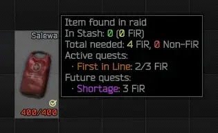
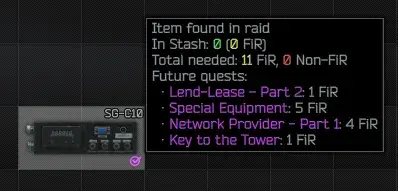
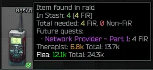
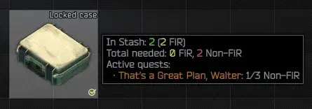
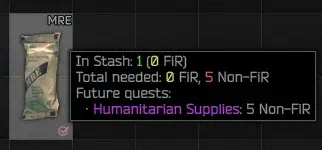
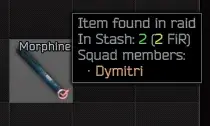
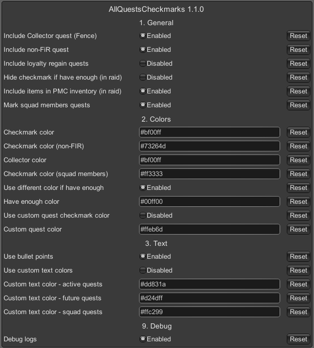

All Quests Checkmarks
- Downloads
- 48,979
- Favourites
- 70
- Mod lists
- 124
Overview
A mod for SPT that overhauls quest checkmarks for items by checking for future quests and slightly changing how default logic checks for quest items. It also adds detailed description to tooltips that show various info.
This mod requires both client and server to have this mod installed. It’s NOT client only mod!
If you are looking for older versions, they’re available to download on GitHub!
Looking for translators - if you are interested in contributing to mod development by adding your language, feel free to create pull request on GitHub
Features
- Marks non-FiR items with default golden checkmark if required for active quest(s) (if enabled in config)
- Marks items required for future quests (also non-FiR if enabled)
- Marks items required by your friends while in raid (if Fika installed and enabled in config)
- Marks items that you have enough for all quests (must be enabled in config)
- Customizable color of Collector quest checkmark
- Collector quest can be disabled in config
- Displays total amount in stash in tooltip (both FiR and non-FiR)
- Displays total required in tooltip (also non-FiR if enabled)
- Displays active and upcoming quests that require this item in tooltip
- Displays names of your squad members who need this item for their active quests in tooltip (if Fika installed and enabled in config)
- Supports operational tasks
- Excludes unreachable quests like event quests
- Marker, Wi-Fi Camera and Jammer are completely excluded as you can just simply buy them from traders
- Counts already handed over items
- Localization - available languages: English, Polish, Russian, Chinese (English will be used if your language is not supported)
- Heavily customizable






Checkmarks colors
- Magenta - Item found in raid and is required for future quests
- Dark purple - Item not found in raid but is required for future quests
- Light green - Have enough items to finish all quests (must be enabled in config)
- Light red - Neither of above, but is required for at least one active quest of one of your squad members (**Fika only**)
Why this mod when you can simply use MoreCheckmarks?
It’s great mod, however I didn’t like few things about it (I wanted only checkmarks for quests). This mod is oriented ONLY around quests (and always will be) so it only shows quest items and nothing else. It performs much more checks and exclusions than MoreCheckmarks, providing more accurate info about active and upcoming quests. It also has more config for quests.
Differences from MoreCheckmarks:
- Quest only
- Supports operational tasks
- More configurable
- Interacts with Fika (marks other players’ active quests in raid)
- Does better filtering of quests (excludes event quests)
- Counts already handed over items
- Excludes already finished subtasks
- Make sure that both SPT Client and SPT Server are not running
- Download mod files by clicking download button at the top of the page (if you need mod for other version of the SPT head to releases page on GitHub)
- Open zip file
- Drag and drop BepInEx and user folders to your SPT directory
- Start server and client and make sure that mod is working
If you are using Fika, don’t install this mod on dedicated host
To access config press F12 while in game and then open AllQuestsCheckmarks tab.

General
- Include Collector quest (Fence) - Whether or not to include items needed for Collector quest
- Include loyalty regain quests - Whether or not to include quests for regaining loyalty (Compensation for Damage (Fence), Make Amends (Lightkeeper) & Chemical questline finale)
- Include non-FiR quest - Whether or not to include quests that don’t require found in raid items
- Hide checkmark if have enough (in raid) - Whether or not to hide checkmark in raid on items that you haveenough for all active and future quests. Be careful when using with ‘Include items in PMC inventory (in raid)’, as this combo may hide checkmarks while still in raid!
- Include items in PMC inventory (in raid) - Whether or not to include items in PMC inventory while in raid in ‘In Stash’ count
- Mark squad members quests - Whether or not to mark items currently needed for players in your squad (**Fika only**)
Colors
- Checkmark color - Color of checkmark if item is not currently needed but is required for future quests*
- Checkmark color (non-FIR) - “Color of checkmark if non-FiR item is not currently needed but is required for future quests*
- Collector color - Color of checkmark for collector quest*
- Use different color if have enough - Whether or not to use different checkmark color if you have enough items for all quests. ‘Hide checkmark if have enough’ option will hide this checkmark while in raid
- Have enough color - Color of checkmark if you have enough items for all quests*
- Use custom quest checkmark color - Whether or not to use custom checkmark color for active quests
- Custom quest color - Custom color of default quest checkmark*
- Checkmark color - Color of checkmark if item is not currently needed but is required for future quests* (**Fika only**)
Text
- Use bullet points - Whether or not to use bullet points in quests list
- Use custom text colors - Whether or not to use custom text colors
- Custom text color - active quests - Custom color of active quests text*
- Custom text color - future quests - Custom color of future quests text*
- Custom text color - squad quests - Custom color of squad quests text*
* - accepted color formats are: HEX #RRGGBB or RGB (0-255 range) RRR,GGG,BBB (e.g. #FF00FF or 255,0,255)
This mod completely overrides default logic of checkmarks so other mods that also alter checkmarks will most likely not work!
Compatible mods
- Fika
- Quest Randomizer
- Most likely all mods with custom traders
Incompatible mods
If you found any other incompatible mods, please let me know.
TODO
Update status in raid on take item
Known Issues
Active LeaveItemAtLocation quests are not marked as active quests
Credits
- Basic ideas about code and where to start inspired by MoreCheckmarks mod.
- Server side part is based on examples provided by Single Player THE CITY.
- Special thanks to Jehree for great tutorial how to setup Visual Studio.
License
Copyright © 2025 danx91 (aka ZGFueDkx)
This mod is distributed under GNU GPLv3 license.
If you believe that this mod infringes yours or someone else’s copyrights, please contact me via Discord to resolve this issue: danx91.
Version
1.3.1
Changes
- Massive changes to data parsing and serialization - mod should run even faster, cause less net traffic, and be more resistant to errors
- Added option to include unreachable quests (feature request)
- Updated C# language version on the client to the latest
Bugfixes
- Fixed crash that occurred when playing with other people as Scav (Fika)
Version
1.3.0
Updated to SPT 4.0
Support for MoreCheckmarks has been dropped as it’s not available for SPT 4.0
Version
1.2.4
Changes
- Added OnlyActiveQuests option (feature request)
Version
1.2.1
This version is for SPT 3.11 only
Changes:
- Added MoreCheckmarks compatibility (minimum version 1.5.17 required)
- Russian localization improvements (community contribution)
For SPT 3.10 Users:
MoreCheckmarks compatibility will not be backported to SPT 3.10.5
Version
1.2.0
Additions
- Updated for SPT 3.11
- Added Russian language (Community contribution)
- Added Chinese language (Community contribution)
For SPT 3.10.5 users
Next update introducing new features will also be backported to SPT 3.10.5.